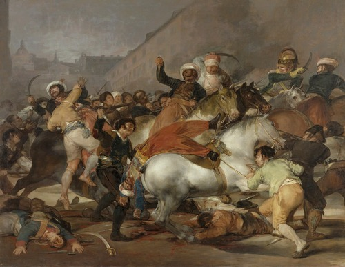
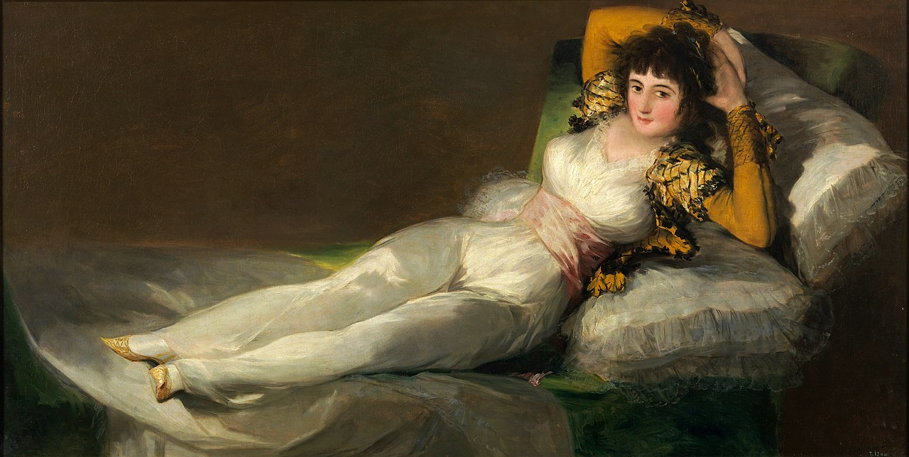
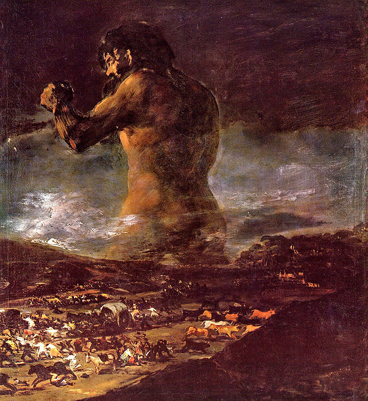
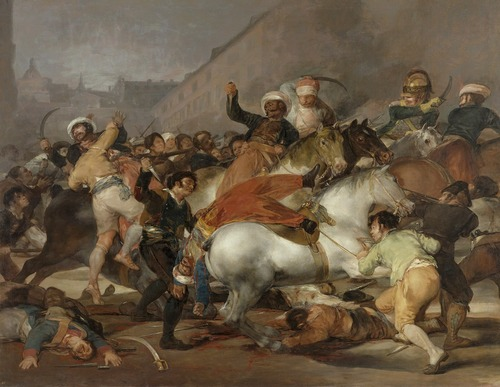
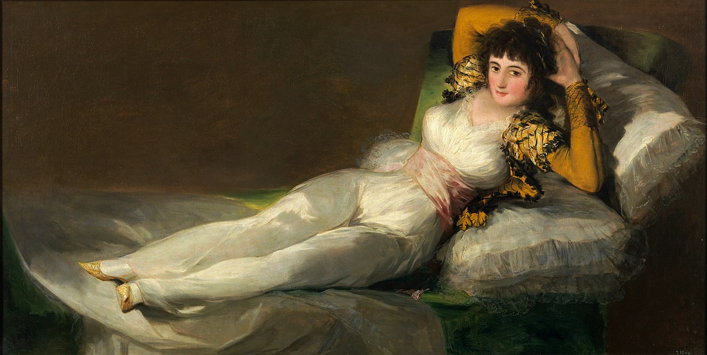
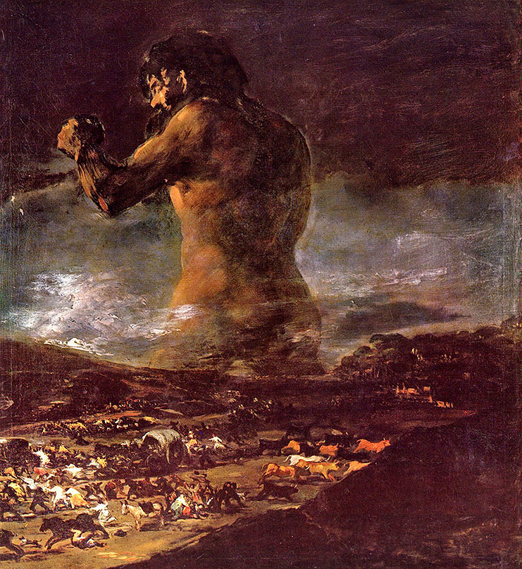

Francisco de Goya
- Nacimiento:
30 de marzo de 1746; Fuendetodos, Spain
- Fallecimiento:
16 de abril de 1828; Bordeaux, France
- Género:
Indefinido
- Campo:
Pintura, Impresión
- Institución:
Real Academia de Bellas Artes de San Fernando
Francisco de Goya es considerado el "padre del arte" contemporáneo, ya que, presenció movimientos de gran importancia como el: romanticismo, surrealismo, impresionismo y expresionismo. Desde su juventud se aplicó al arte, estudió en una escuela que se especializaba en dicha disciplina y logró conseguir varios premios que terminó rechazando. Hastiado de sentirse “limitado” por la escuela, emprendió su propio camino hacia Italia. Un tiempo después llega a Madrid, donde empieza un trabajo como diseñador de tapices, esto genera cambios en su estilo. Ascendió rápidamente entre los escalones sociales, hasta llegar al castillo del rey, donde formó parte de la corte real, accediendo a las pinturas de los reyes y al autor de las mismas, Velázquez, por el que cae profundamente enamorado. A pesar de haber realizado numerosas obras que eran alabadas por una cantidad impresionante de gente, entre ellos reyes y nobles, el pintor no disfruto a plenitud su vida. Goya fue perdiendo la audición, y con esto aumentando su mal genio. La pintura blanca se creaba con plomo, y el artista al trabajar con esta tuvo un saturnismo, intoxicación de dicho metal. A medida que implementaba la pintura, más fuerte fue el efecto, provocando que su sordera aumentara, convirtiendo al pintor en arisco y solitario, además de reservado. Pero, esto le abrió las puertas a probar nuevos estilos, que nacieron luego de 100 años.